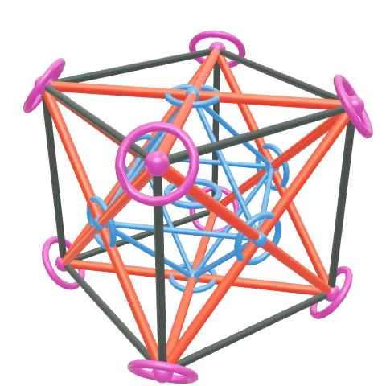
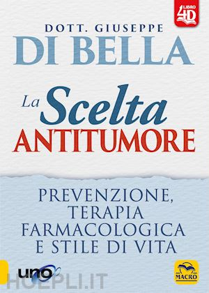

Villaggi Diffusi.
Il primo è la Sardegna.

Da qui arriva chi apre il link: la casa, l'invito di un amico, il QR del volantino.
Con la tua mail.
Vale solo l'ultimo arrivato. mandane un altro
Niente password: ogni volta un codice nuovo alla mail. Chi entra la prima volta sceglie poi il villaggio e i suoi talenti.
11 ottobre · san Firmino
La casa di chi è dentro. Un tasto grande, la foto; il resto ha il suo posto.

La foto è già un'orma.
Il testo si scrive sotto la foto. [ il racconto ]
Si registra, o si collega la diretta: Strumenti per fare ordine.
Il resto — calendario, costi, rubrica, karma yoga — ha i suoi tasti. Qui una cosa sola.
Cas'ale · Baratili
Lo stadio lo cambia chi è dentro. Un obiettivo preso dal villaggio (karma yoga) entra qui «in avanzamento».
Un vocale è un file audio nell'orma. Una puntata registrata della radio è la stessa cosa, con «Cos'è → Puntata».

«Coordina» lo dà chi guida il villaggio. Gli altri tasti sono karma yoga: ognuno prende quello che può fare.
Con «Tutti» la foto compare nella Bacheca del villaggio e nella lente di chi guarda. Con «Solo io» resta nell'orma.
Chi e cosa c'è intorno.
Quello che si compra insieme.
Strumenti per fare ordine.
Il contesto stagionale ed itinerante.
Ogni oggetto ha un dono. Tocca una cosa: ti porta a chi l'ha fatta, a chi la vende, a chi ne parla.
Dalla foto alla squadra.
→ ore e talenti nel registro
Si torna sempre dalla foto: la lente e la Bacheca sono la lettura, l'orma e la lavagna sono il lavoro.
La Bacheca
Il libro e quello che ne parla.

Oggi «pubblico» vuol dire: lo vede chi è entrato. Aprirlo anche a chi non ha un account è una regola da scrivere.
Qualcuno ha risposto alla tua foto.
Il giro si chiude dove è cominciato: dalla foto. Oggi nel database ci sono già avvisi così: «Alessandra ora fa parte di Villaggio Felicitas – Civiltà Sarda».